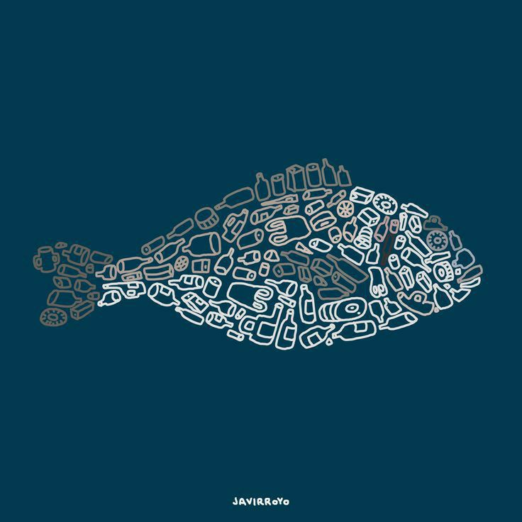
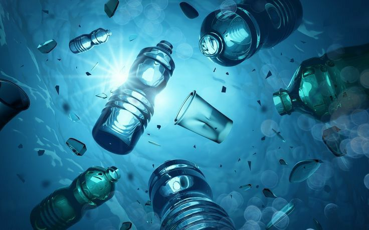

ODS 14 – VIDA NA ÁGUA.

A conservação dos recursos marinhos é tema deste ODS. Uma preocupação importante é com a redução da poluição (14.1), enfrentando, por exemplo, a acidificação dos mares (14.3). A pesca, de acordo com a meta 14.4, deve ser regulada, a fim de restaurar populações de peixes, para que haja um rendimento máximo e sustentável. Neste sentido, devem ser preservados também o acesso ao mar, aos recursos naturais e aos mercados ao pescador artesanal (14.b).
OBJETIVOS
A POLUIÇÃO DOS OCEANOS.
A poluição dos oceanos é claramente um problema de grande importância que precisa de muito destaque e consciência de todos para que possa ser resolvido. Hoje em dia há a possibilidade de que se não houver mudança alguma em relação à poluição do mar, em um futuro próximo, talvez haja mais plástico do que peixes nos oceanos. Essa é a conclusão de um novo relatório do Fórum Econômico Mundial e da Fundação Ellen MacArthur:
"As melhores pesquisas
disponíveis hoje estimam
que haja mais de 150
milhões de toneladas
de plásticos no
oceano hoje",
diz
o relatório. "Num
cenário em que nada
mude, espera-se que o
oceano contenha 1 tonelada
de plástico para cada
3 toneladas de peixes
em 2025 e, em 2050,
mais plásticos que peixes
(por peso)."

Em outras palavras, em apenas 34 anos, a quantidade de lixo plástico no oceano vai superar, em peso, a de peixes. Pelo menos 8 milhões de toneladas de plástico - o equivalente a um caminhão de lixo por minuto - são despejadas no oceano anualmente, segundo o Fórum Econômico Mundial. O relatório, "A Nova Economia do Plástico: Repensando o Futuro dos Plásticos", também oferece esperanças. Novos materiais e tecnologias indicam que é possível erradicar o desperdício de plástico. Alcançar tal mudança sistêmica, diz a Fundação Ellen MacArthur, vai exigir uma importante colaboração, incluindo empresas de bens de consumo, fabricantes de plásticos, empresas envolvidas na reciclagem e autoridades.
MAS O QUE CAUSA A POLUIÇÃO DA ÁGUA?
- Aquecimento global
- Desmatamento
- Atividades industriais, agrícolas e pecuárias
- Lixos e efluentes de águas fecais
- Tráfego marítimo
- Derramamentos de combustível
O aumento da temperatura terrestre, em função das emissões de CO2, esquenta a água, provocando uma diminuição de seu nível de oxigênio.
O corte das florestas pode esgotar as fontes hídricas e gera resíduos orgânicos que servem de caldo de cultura para bactérias contaminantes.
As descargas de produtos químicos procedentes destes setores são uma das causas principais da eutrofização da água.
A ONU garante que mais de 80% das águas residuais do mundo que chegam ao mar e aos rios estão sem depurar.
Boa parte dos plásticos que poluem os oceanos procedem dos barcos pesqueiros, petroleiros e do transporte de mercadorias.
O transporte e o armazenamento do petróleo e seus derivados propiciam filtrações que podem chegar às fontes de água.
CONSEQUÊNCIAS DA POLUIÇÃO DA ÁGUA.

A deterioração da qualidade da água tem impacto negativo no meio ambiente, na saúde e na economia global.
O próprio Presidente do Banco Mundial, David Malpass, alerta sobre o impacto econômico: "A deterioração da
qualidade da água impede o crescimento e agrava a pobreza em muitos países". Isso significa que quando a
demanda bioquímica de oxigênio (medida que determina a poluição orgânica verificada na água) ultrapassa um
determinado limite, o crescimento do Produto Interno Bruto (PIB) das regiões localizada nas bacias hidrográficas
cai até um terço. A seguida, analisamos outras consequências:
Destruição da biodiversidade: A poluição hídrica empobrece os ecossistemas aquáticos e facilita
a proliferação descontrolada de algas fitoplanctônicas nos lagos (eutrofização).
Poluição da cadeia alimentar: A pesca em águas contaminadas, bem como a utilização de águas
residuais na pecuária e agricultura, podem transmitir toxinas aos alimentos que prejudicam a nossa saúde ao serem ingeridos.
Escassez de água potável: A ONU admite que ainda existem bilhões de pessoas no mundo sem acesso a água
potável e saneamento, especialmente em áreas rurais.
Doenças: A OMS calcula que cerca de 2 bilhões de pessoas bebem água contaminada por excrementos, expondo-se
a doenças como a cólera, hepatite A e disenteria.
Mortalidade infantil: Segundo a ONU, as doenças diarreicas vinculadas à falta de higiene provocam a morte em
cerca de mil crianças/dia em todo o mundo.
SOLUÇÕES PARA A POLUIÇAÕ DA ÁGUA.
A metade dos habitantes do planeta viverá em áreas com escassez de água em 2025, razão pela qual cada gota contaminada hoje significa uma perda irreparável para o dia de amanhã. Por isso, devemos evitar a poluição da água com medidas como:
- Reduzir as emissões de CO2 para evitar o aquecimento terrestre e a acidificação dos oceanos.
- Atenuar o uso de pesticidas químicos e nutrientes nos cultivos agrícolas.
- Diminuir e depurar as águas residuais de forma segura para que, além de não poluírem,
possam ser reutilizadas para rega e produção de energia. - Limitar o uso de plásticos de um só uso que acabam flutuando em rios, lagos e oceanos,
muitos deles na forma de microplásticos. - Promover a pesca sustentável para garantir a sobrevivência das espécies e evitar o
empobrecimento dos mares.